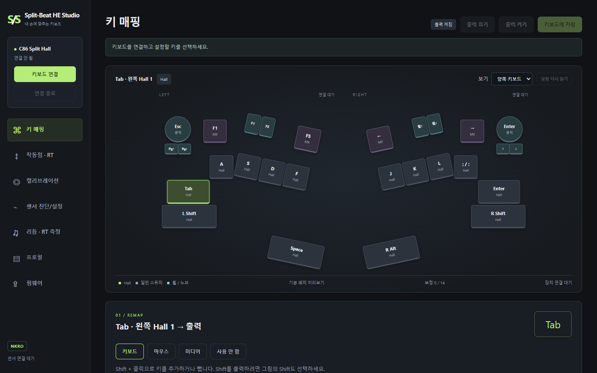
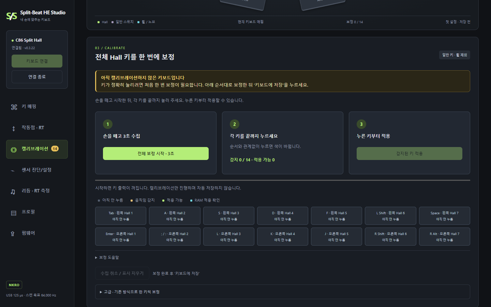
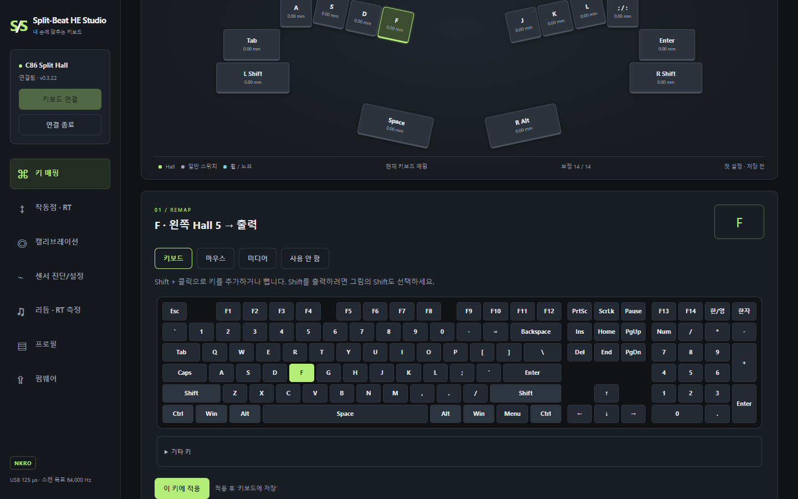
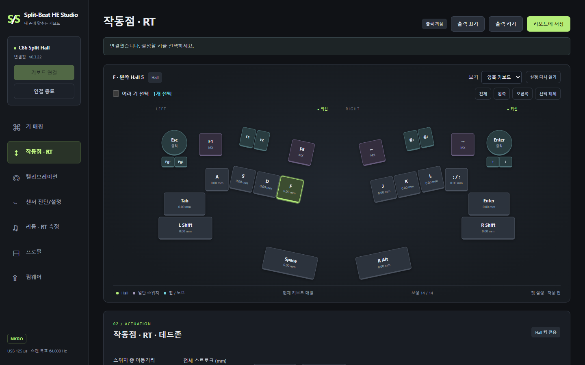
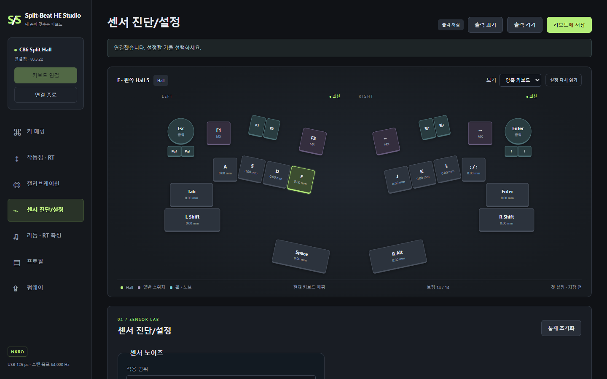
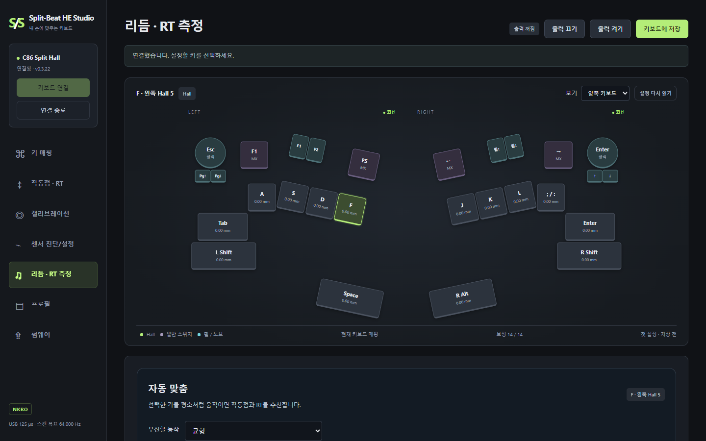
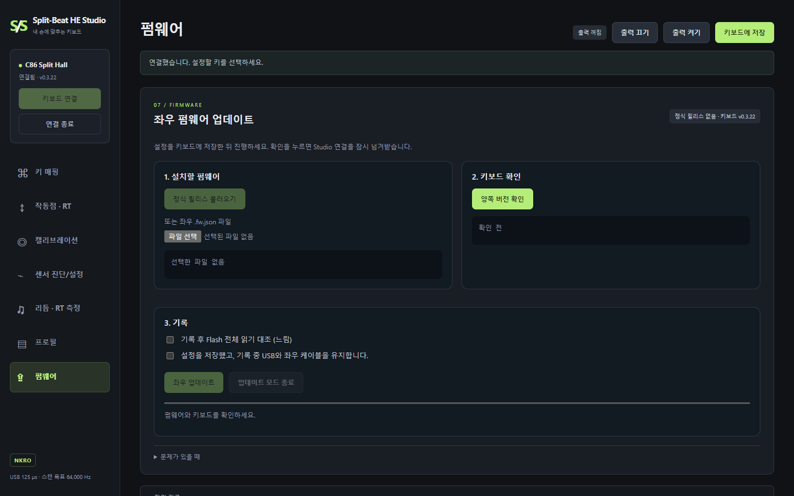

Split-Beat HE 사용 설명서
분리형 Hall 키보드를 연결하고, 손에 맞게 보정하고, 원하는 대로 설정하는 방법입니다.
- 연결왼쪽 USB-C를 PC에, 좌우를 split 케이블로 연결
- Studio 열기Chrome·Edge에서 Studio 접속
- 캘리브레이션처음 연결하면 보정 화면이 자동으로 열립니다
- 저장설정을 바꾼 뒤 ‘키보드에 저장’
시작하기
구성
왼쪽과 오른쪽 두 반쪽으로 나뉘어 있고, 각 반쪽에는 다음 입력이 있습니다.
- Hall 키 7개: 자석 센서로 눌린 깊이를 읽습니다. 작동점과 래피드 트리거(RT)를 키마다 정할 수 있습니다.
- 일반(MX) 스위치 2개: 눌림/뗌만 있는 스위치입니다.
- 노브 1개: 돌리기(시계/반시계)와 누르기를 각각 매핑합니다.
- 롤러(휠) 1개: 위·아래 회전을 각각 매핑합니다.
준비물
- Windows 또는 macOS PC와 Chrome 또는 Microsoft Edge (Firefox·Safari는 WebHID를 지원하지 않아 Studio를 쓸 수 없습니다)
- USB-C 케이블(PC ↔ 왼쪽), split 케이블(왼쪽 ↔ 오른쪽)
연결 순서
- 왼쪽과 오른쪽을 split 케이블로 연결합니다.
- 왼쪽의 USB-C를 PC에 연결합니다. 오른쪽은 왼쪽을 통해 전원과 통신을 받습니다.
- 별도 드라이버 없이 바로 키보드로 인식됩니다. 설정은 Studio에서 합니다.
Studio는 설치 없이 웹에서 동작합니다. 설정은 키보드 자체에 저장되므로, 한 번 저장하면 다른 PC에서도 그대로 사용할 수 있습니다.
키보드 연결
- Chrome이나 Edge에서 studio.codekilab.com을 엽니다.
- 왼쪽 위 키보드 연결을 누릅니다.
- 브라우저 창에서 키보드를 선택하고 연결을 누릅니다. 한 번 허용하면 다음부터는 선택 창 없이 바로 연결됩니다.

Studio는 한 번에 한 탭에서만 키보드를 잡을 수 있습니다. 다른 탭에 Studio가 열려 있으면 그 탭을 닫거나 연결 종료한 뒤 다시 연결하세요.
처음 캘리브레이션
Hall 키는 자석과 센서의 위치가 키마다 조금씩 달라서, 처음 한 번 놓은 위치와 끝까지 누른 위치를 알려 줘야 정확하게 동작합니다. 보정하지 않은 키가 있으면 연결하자마자 캘리브레이션 화면이 열리고, 메뉴에 남은 키 수가 표시됩니다.

- 모든 키에서 손을 뗍니다. 전체 보정 시작 · 3초을 누르고 3초간 키보드를 건드리지 마세요.
- Hall 키 14개를 하나씩 끝까지 꾹 눌렀다 뗍니다. 순서는 상관없습니다. 키 상태가 노란색(움직임 감지) → 초록색(적용 가능)으로 바뀝니다. 초록색이 되어도 바닥까지 눌러 주세요.
- 감지된 키 적용을 누릅니다. 일부 키만 눌렀다면 그 키만 적용됩니다.
- 오른쪽 위 키보드에 저장을 눌러 보관합니다.
보정하지 않은 Hall 키가 하나라도 있으면 키 출력을 켤 수 없습니다. 보정 중에는 키 출력이 잠시 꺼집니다. MX 스위치·노브·롤러는 보정할 필요가 없습니다.
한 키만 다시 보정하기
특정 키만 이상하면 화면 아래 고급 · 기존 방식으로 한 키씩 보정을 펼칩니다. 키를 고른 뒤 놓은 위치 수집 → 키를 끝까지 누른 채 누른 위치 수집 → 보정 적용 순서로 진행하고 저장합니다.
키캡이나 스위치를 바꿨다면 해당 키를 다시 보정하세요.
저장과 키 출력
적용과 저장은 다릅니다
각 화면의 적용 버튼은 설정을 키보드에 바로 반영하지만, 전원이 꺼지면 사라집니다. 오른쪽 위 키보드에 저장을 눌러야 다음에 연결해도 유지됩니다. 저장하지 않은 변경이 있으면 저장 버튼이 강조됩니다.
| 설정 | ‘키보드에 저장’ 필요 |
|---|---|
| 캘리브레이션, 키 매핑, 작동점·RT·데드존, 곡선, 노이즈 데드밴드 | 예 |
| ADC 스캔레이트·이동평균 | 저장되지 않음. 전원을 다시 켜면 기본값으로 돌아갑니다 |
키 출력 끄기/켜기
오른쪽 위 출력 끄기를 누르면 키를 눌러도 PC에 입력되지 않습니다. 설정 중 실수로 입력되는 것을 막을 때 씁니다. 다시 출력 켜기를 누르면 돌아옵니다.
- 보정·설정 적용·측정 중에는 Studio가 출력을 잠시 끄고, 끝나면 원래대로 되돌립니다.
- 연결 종료는 출력 상태를 바꾸지 않습니다.
키 매핑
키보드 그림에서 바꿀 입력을 누르고, 아래에서 출력할 동작을 고른 뒤 이 키에 적용을 누릅니다.

| 종류 | 설명 |
|---|---|
| 키보드 | 일반 키, 펑크션 키, 한/영·한자, 숫자패드 등. Shift + 클릭으로 여러 키를 더해 조합(예: Ctrl + C)을 만듭니다. |
| 마우스 | 마우스 버튼, 스크롤, 포인터 이동(↑ ↓ ← →) |
| 미디어 | 재생/일시정지, 볼륨 등 미디어 키 |
| 사용 안 함 | 입력해도 아무 동작도 하지 않습니다 |
노브와 롤러
노브는 누르기, 시계 방향, 반시계 방향이 각각 따로 표시됩니다. 롤러는 두 회전 방향을 각각 매핑합니다. 한 칸 돌릴 때마다 지정한 키를 한 번 입력합니다.
마우스 포인터 이동
마우스 → 포인터 화살표를 고르면 속도 칸이 나타납니다. 입력 종류에 따라 속도의 뜻이 다릅니다.
- Hall 키: 끝까지 눌렀을 때의 속도(px/s)입니다. 살짝 누르면 느리게, 깊게 누르면 빠르게 움직입니다.
- MX 스위치: 누르고 있으면 처음엔 느리게 시작해 약 0.35초 동안 지정 속도까지 빨라집니다.
- 노브·롤러: 한 칸당 움직일 픽셀 수입니다. 빠르게 돌릴 때 가속을 켜면 천천히 돌릴 땐 정밀하게, 빠르게 돌릴 땐 최대 선택 배율(×2~×16)까지 멀리 움직입니다.
매핑을 바꾸면 해당 키가 한 번 해제됩니다. 적용 후 키보드에 저장을 잊지 마세요.
작동점 · RT
Hall 키가 얼마나 눌렸을 때 입력되는지를 정합니다. 키 그림에서 키를 선택하면 해당 키의 값이 보이고, 실시간 막대로 지금 눌린 깊이를 확인할 수 있습니다.

| 항목 | 뜻 | 이렇게 조정하세요 |
|---|---|---|
| 스위치 총 이동거리 | 스위치를 끝까지 눌렀을 때의 거리 | 사용 중인 스위치 사양(예: 3.40 mm)을 고르세요 |
| 작동 지점 | 처음 입력이 시작되는 깊이 | 오입력이 잦으면 깊게, 빠른 반응이 필요하면 얕게 |
| 래피드 트리거(RT) | 떼는 방향으로 일정 거리만 움직여도 해제하고, 다시 내려가면 바로 재입력 | 리듬 게임·연타에 유리합니다 |
| 눌림 / 복귀 RT | 재입력·해제에 필요한 이동량 | 작을수록 민감합니다. 손떨림으로 끊기면 키우세요 |
| 상단 / 하단 데드존 | 맨 위·맨 아래 구간을 각각 0 mm, 끝까지로 간주 | 살짝 얹은 손가락이나 바닥 반동을 무시할 때 |
값은 0.001 mm 단위로 입력할 수 있습니다. 여러 키를 함께 바꾸려면 여러 키 선택을 켜거나 Ctrl + 클릭으로 키를 고르세요. 각 항목 옆 i 버튼에 예시 설명이 있습니다.
미해제 재입력 허용
RT로 해제되기 전에도 다시 눌림을 보내는 옵션입니다. 기본값은 꺼짐입니다. 켜면 게임에 키를 뗀 것으로 전달되어 롱노트가 끊길 수 있으니 필요한 키에만 쓰세요.
거리 보정 곡선
센서 값을 실제 눌린 거리(mm)로 바꾸는 방식입니다. 선형, 스위치 근사 곡선, 직접 그린 커스텀 곡선 중에서 고릅니다. 커스텀 곡선은 센서 진단/설정에서 그립니다.
센서 진단/설정
키가 혼자 눌리거나 반응이 이상할 때 원인을 찾고 조정하는 화면입니다.

- 노이즈 데드밴드: 이보다 작은 센서 변화는 무시합니다. 키가 가만히 있는데 입력되면 조금 올리세요. 선택 키·왼쪽·오른쪽·전체에 적용할 수 있고 저장이 필요합니다.
- ADC 스캔레이트 · 이동평균: 센서를 읽는 속도와 평균할 샘플 수입니다. 평균을 늘리면 값이 안정되는 대신 반응이 아주 조금 늦어집니다. 기본 이동평균은 8이며, 전원을 다시 켜면 기본값으로 돌아갑니다.
- 실시간 센서값: 최근 10·30·60초의 그래프와 분포를 보여 줍니다. 원시 ADC 값과 평균·노이즈 제거 후 실제 판정에 쓰는 값을 함께 볼 수 있습니다.
- 다른 키의 동시 변화: 한 키를 누를 때 주변 키 값이 같이 움직이는지 확인합니다.
ADC → 거리 곡선 그리기
ADC → 거리 곡선 그래프에서 현재 곡선, 직선, 커스텀 곡선을 함께 볼 수 있습니다. 그래프 위를 마우스로 끌면 커스텀 곡선이 그려지고, 깊어질수록 거리가 줄지 않게 자동으로 다듬어집니다. 적용할 키 범위를 고르고 곡선 적용 → 키보드에 저장을 누르세요.
커스텀 곡선은 키보드 전체가 함께 쓰는 표 하나입니다. 프로필 파일에는 포함되지 않습니다.
리듬 측정 · 자동 맞춤

리듬 연습
BPM과 박자를 정하고 메트로놈에 맞춰 선택한 키를 누릅니다. 노트 레인에 눌림·해제 타이밍이 EARLY/LATE로 표시되고, 센서 그래프로 손가락 움직임을 확인할 수 있습니다. 노트 속도(0.5×~4.0×)는 화면 표시만 바꿉니다.
자동 맞춤
보정된 Hall 키를 선택하고 자동 맞춤을 시작하면, 손 떼기 → 손가락 얹기 → 반복 입력 → 길게 누르기를 차례로 측정해 작동점과 RT를 추천합니다. 균형 · 연타 · 유지 중 원하는 방향을 고르고 추천값을 적용해 본 뒤, 마음에 들면 저장하세요.
측정 결과는 브라우저가 받은 센서 기록을 바탕으로 한 참고값입니다. 실제 게임에서 한 번 더 확인하세요.
프로필
보정·매핑·RT·이동거리를 하나의 JSON 파일로 보관하고 불러옵니다.
- 프로필 내보내기: 현재 설정을 파일로 저장합니다. 펌웨어 업데이트 전이나 큰 변경 전에 백업해 두세요.
- 프로필 가져오기: 파일의 설정을 키보드에 적용합니다. 적용 후 키보드에 저장을 누르세요.
펌웨어 업데이트
Studio의 펌웨어 탭에서 왼쪽과 오른쪽을 한 번에 업데이트합니다. 오른쪽은 왼쪽 USB를 통해 기록됩니다.

- 설정을 먼저 키보드에 저장합니다. 필요하면 프로필도 내보내 두세요.
- 정식 릴리스 불러오기를 누릅니다.
- 양쪽 버전 확인을 누릅니다. 이때 Studio 연결을 펌웨어 탭이 잠시 넘겨받습니다.
- 확인 항목에 체크하고 좌우 업데이트를 누릅니다. 이미 같은 버전인 쪽은 건너뜁니다.
- 끝나면 업데이트 모드 종료 → 키보드 연결로 다시 연결합니다.
기록 중에는 USB 케이블과 split 케이블을 뽑지 마세요. 중간에 끊겼다면 양쪽 전원을 분리했다가 다시 연결하고, 같은 순서로 다시 진행하면 됩니다.
새 정식 펌웨어가 나오면 Studio 상단에 안내가 표시됩니다.
AI로 설정하기
Split-Beat HE MCP 플러그인을 설치하면 Claude Desktop 같은 AI 앱에서 대화로 키보드를 설정할 수 있습니다. 예: “오른쪽 롤러를 마우스 포인터 위아래 이동으로 바꿔 줘”, “F와 J 키 작동점을 1.2 mm로 맞춰 줘”.
- 릴리스 페이지에서
.mcpb파일을 내려받습니다. - Claude Desktop에서 파일을 열어 설치합니다.
- 대화에서 키보드 연결을 요청하면, 현재 설정을 읽고 바꿀 내용을 확인한 뒤 적용합니다.
Studio와 플러그인을 동시에 쓰지 마세요. 하나를 쓰는 동안 다른 쪽은 연결을 종료하세요.
문제 해결
- ‘키보드 연결’을 눌러도 장치 목록에 키보드가 없어요.
- Chrome 또는 Edge인지, 주소가
https://studio.codekilab.com인지 확인하세요. USB 허브 대신 PC에 직접 연결하고, 왼쪽의 USB-C를 사용했는지 확인하세요. - 다른 탭에서 사용 중이라고 나와요.
- Studio가 열린 다른 탭이나 창을 닫거나, 그 탭에서 연결 종료를 누르세요.
- PC를 켰는데 오른쪽 키보드가 반응하지 않아요.
- 최신 펌웨어는 몇 초 안에 좌우 연결을 자동으로 복구합니다. 계속 반응이 없으면 split 케이블이 끝까지 꽂혔는지 확인하고, 왼쪽 USB를 뽑았다 다시 연결하세요. 펌웨어가 오래됐다면 업데이트하세요.
- 키가 가끔 혼자 눌려요.
- 먼저 그 키를 다시 보정하세요. 계속되면 센서 진단/설정에서 그 키의 그래프를 보고, 노이즈 데드밴드를 조금 올리거나 작동점을 더 깊게 설정하세요.
- ‘출력 켜기’가 BUSY로 거부돼요.
- 오른쪽 연결이 한 번 끊긴 뒤 좌우 ADC 설정 확인을 기다리는 상태입니다. 센서 진단/설정에서 좌우에 적용을 한 번 누른 뒤 다시 켜세요.
- ‘출력 켜기’가 NOT_READY로 거부돼요.
- 보정하지 않은 Hall 키가 있거나 오른쪽이 아직 준비되지 않은 상태입니다. 메뉴의 캘리브레이션에 숫자 배지가 있으면 남은 키를 보정하세요.
- 설정이 재부팅 후 사라졌어요.
- 키보드에 저장을 눌렀는지 확인하세요. ADC 스캔레이트·이동평균은 원래 저장되지 않고 전원을 켤 때 기본값으로 돌아갑니다.
- Studio에서 ‘펌웨어 vX 이상이 필요합니다’라고 나와요.
- 포인터 이동, 커스텀 곡선 같은 새 기능은 최신 펌웨어가 필요합니다. 펌웨어 업데이트 후 다시 시도하세요.
기본 매핑표
처음 받았을 때 또는 기본값으로 되돌렸을 때의 매핑입니다. CW/CCW는 회전 방향을 뜻합니다.
| 위치 | 기본 동작 |
|---|---|
| 왼쪽 Hall 1–7 | Tab · A · S · D · F · L Shift · Space |
| 오른쪽 Hall 1–7 | Enter · ; · L · K · J · R Shift · R Alt |
| 왼쪽 MX 1 / MX 4 | F1 / F5 |
| 오른쪽 MX 1 / MX 4 | → / ← |
| 왼쪽 노브 누르기 / CW / CCW | Esc / Page Up / Page Down |
| 오른쪽 노브 누르기 / CW / CCW | Enter / ↑ / ↓ |
| 왼쪽 롤러 CW / CCW | F1 / F2 |
| 오른쪽 롤러 CW / CCW | 스크롤 ↑ / 스크롤 ↓ |